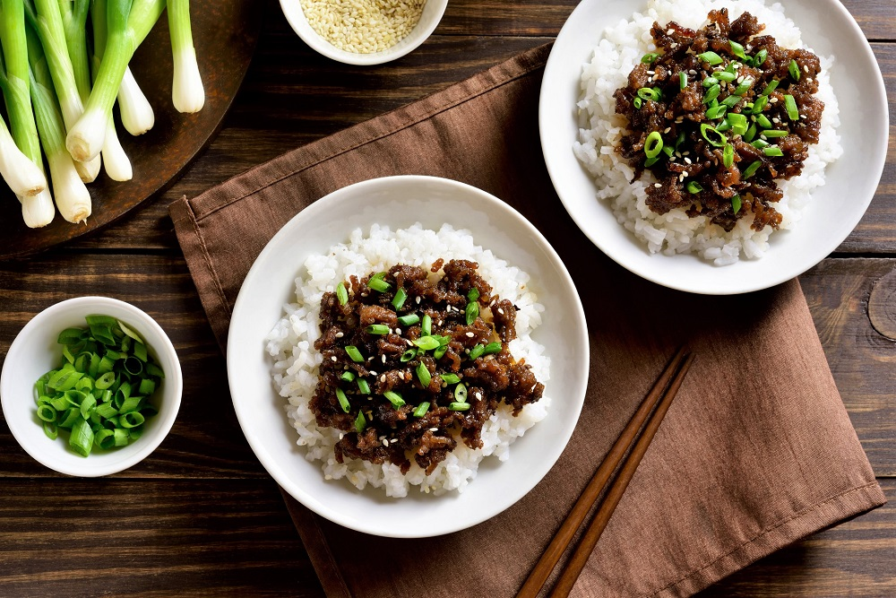

Korean Ground Beef Bowl

Description
This recipe is a perfect addition for those that like easy-to-make dishes for meal prepping in bulk.
Beef bowls are a simple yet delicious meal that will have you looking forward to lunch time!
Ingredients
- 1 pound lean ground beef
- 5 cloves garlic, crushed
- 1 tablespoon freshly grated ginger
- 2 teaspoons toasted sesame oil
- 1/2 cup reduced-sodium soy sauce
- 1/3 cup light brown sugar
- 1/4 teaspoon crushed red pepper
- 6 green onions, chopped, divided
- 4 cups hot cooked brown rice
- 1 tablespoon toasted sesame seeds
Steps
-
Heat a large skillet over medium-high heat. Add beef and cook, stirring and crumbling into small pieces
until browned, 5 to 7 minutes. Drain excess grease.
-
Stir in garlic, ginger, and sesame oil and cook until fragrant, about 2 minutes.
Stir in soy sauce, brown sugar, and red pepper.
Cook until beef absorbs some sauce, about 7 minutes. Add 1/2 of chopped green onions.
-
Serve over hot cooked rice; garnish with sesame seeds and remaining green onions.
Return to Main Page
Return to top